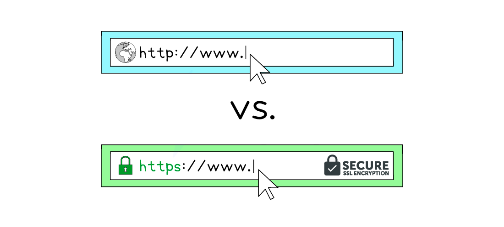
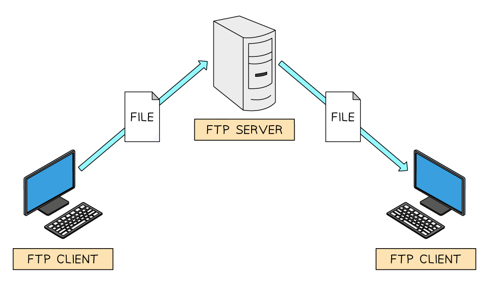
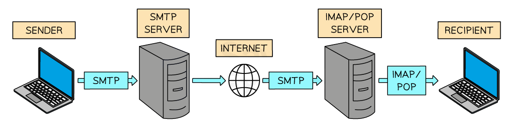

Standard protocols
- A protocol is a set of rules that govern communication on a network
- There are protocols for different purposes, such as:
- HTTP & HTTPS
- FTP
- POP, IMAP & SMTP
- BitTorrent
HTTP & HTTPS
- Hypertext Transfer Protocol (HTTP) allows communication between clients and servers for website viewing
- HTTP allows clients to receive data from the sever (fetching a webpage) and send data to the server (submitting a form, uploading a file)
- HTTPS works in the same way as HTTP but with an added layer of security
- All data sent and received using HTTPS is encrypted
- HTTPS is used to protect sensitive information such as passwords, financial information and personal data

FTP
- File Transfer Protocol (FTP) allows sending and receiving files between computers
- Uploading and downloading files to/from a web server is often completed using FTP
- FTP offers greater efficiency and support for bulk transfers and large files such as resuming interrupted transfers
- FTP clients are software applications that use the FTP protocol to make the process easier for users

POP, IMAP & SMTP
- A family of protocols that handle sending and receiving of email across the internet (WAN)

SMTP
- Simple Mail Transfer Protocol (SMTP) is a protocol that allows communication between an email sender and the email server, and between different email servers using the internet
- In the diagram above, SMTP is used to transfer the senders email to their email providers server and SMTP is used to transfer the email to the recipients email server
POP
- Post Office Protocol (POP) is a protocol for downloading emails to a device from an email server
- Once the email has been retrieved it is removed from the server
IMAP
- Internet Message Access Protocol (IMAP) is a protocol for downloading emails to a device from an email server
- Once the email has been retrieved, a copy is retained on the mail server
Advantages & disadvantages of POP/IMAP
| Advantages | Disadvantages | |
|---|---|---|
| POP | - Frees up storage space on email servers - Faster on slow connections |
- Only access emails from the device they’re downloaded to - Emails deleted on the server once downloaded |
| IMAP | - View and manage emails from any device with internet access - Changes made on one device are synchronised on all connected devices |
- Server storage space can limit amount of retained emails - Requires internet access to view emails |
BitTorrent
- BitTorrent is a peer-to-peer (P2P) file-sharing protocol used to distribute large amounts of data efficiently across the internet
- Instead of downloading a file from a single central server, BitTorrent allows users to download pieces of the file from multiple users (peers) who already have parts of it
- This makes file sharing:
- Faster, as downloads come from many sources at once
- More efficient, as it reduces the load on any single server
- BitTorrent is often used for:
- Sharing large files, such as software, videos, or games
- Decentralised distribution, which avoids the need for central hosting
- While BitTorrent is a legal technology, it is sometimes used for sharing copyrighted content illegally, so ethical and legal use is important